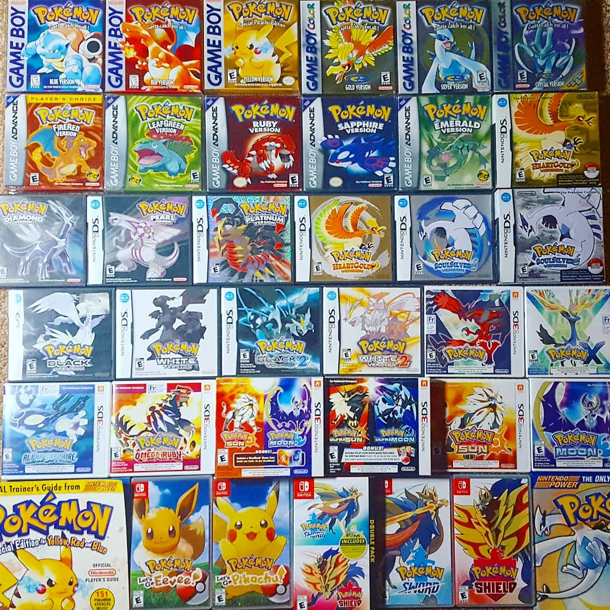
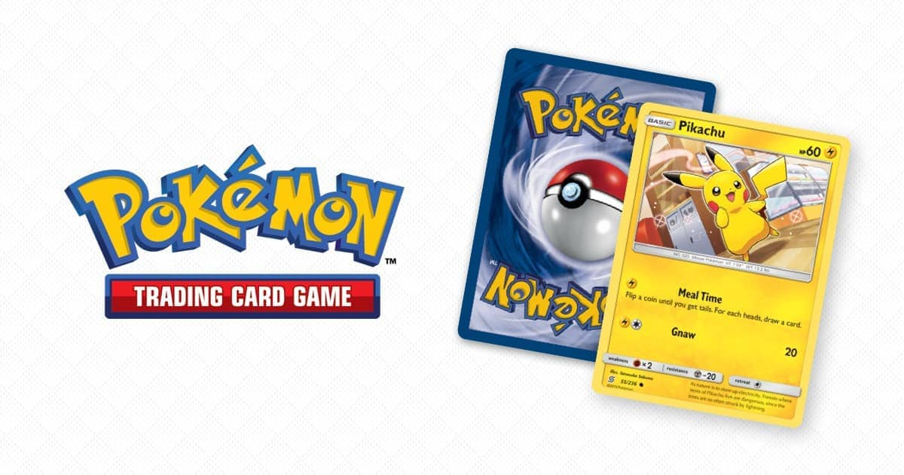
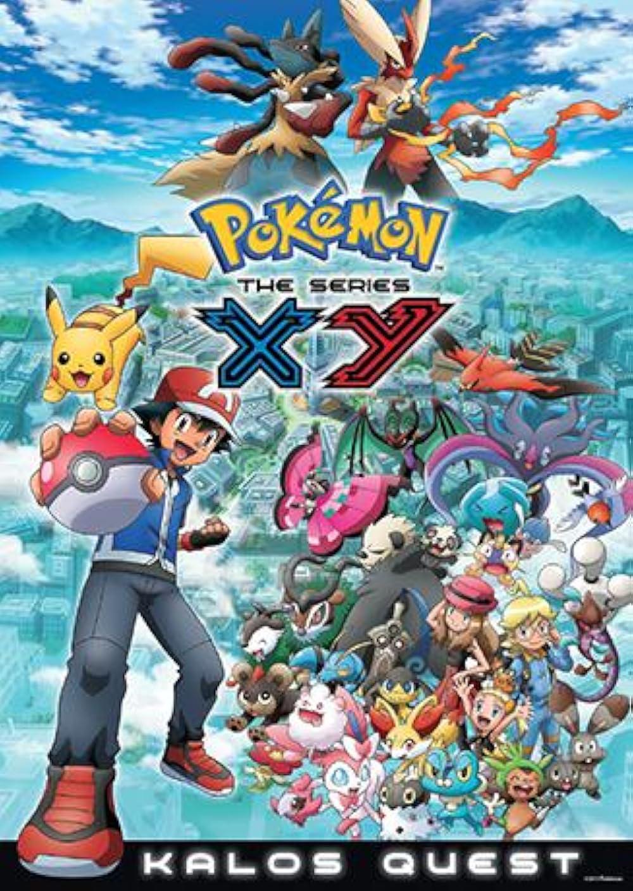
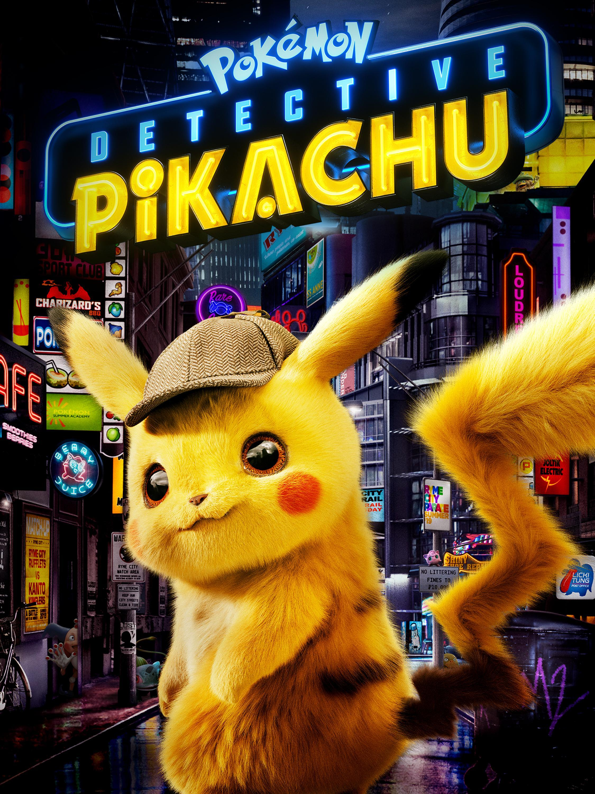

Pokémon
Table of Contents:
Overview:
Video Games:

Pokémon video games have been released in a wide variety of genres. The role-playing games (RPGs) developed by Game Freak are considered the core series of the franchise. Various spin-off games also exist, such as Pokémon Mystery Dungeon, a roguelike RPG series, Pokémon Ranger, an action RPG series, and Detective Pikachu (2018), an adventure game. Pokémon games, in particular the core RPGs, are commonly classified in generations. For example, Junichi Masuda referred to Diamond and Pearl (2006) as Gen 4, and X and Y (2013) as the 6th generation.
Until 2011, Pokémon games were released exclusively on Nintendo's consoles. With the rise of the smartphone during the 2010s, the Pokémon Company also began developing, publishing, and licensing Pokémon titles for the mobile phone market, most notably Pokémon Go (2016), an augmented reality game developed by Niantic that spawned a worldwide craze in the summer of 2016.
According to the official website of the Pokémon Company, as of March 2024, over 480 million Pokémon game units have been sold worldwide.
Trading Crad Game:

The Pokémon Trading Card Game (PTCG) was one of the first collectable card games (CCGs) in Japan. It was inspired by Magic: The Gathering. In the card game, the players use a 60-card deck featuring Basic and evolved Pokémon, Energy cards, and Trainer cards to help them knock out the opponent's Pokémon, drawing prize cards and winning the game. Cards are classified into various levels of rarity, ranging from Common to Rare Holofoil with a holographic illustration. Rare cards, including limited edition, exclusive cards, and older cards, are highly valued among collectors due to their scarcity.
According to the official website of The Pokémon Company, 64.8 billion cards have been produced as of March 2024.
Anime:

As of 2025, the anime consists of over 1,300 episodes across 27 seasons. Its current season, Pokémon Horizons – The Search for Laqua, started airing on 12 April 2024. The anime originally focused on Ash Ketchum and his travels across the Pokémon world with his partner, Pikachu. They were retired as protagonists at the end of season 25. The 26th season, Pokémon Horizons, introduced two new protagonists, Liko and Roy. A total of 23 anime films have been released, the most recent being Pokémon the Movie: Secrets of the Jungle (2021).
Spin-off series from the anime have also been produced, including a variety show titled Weekly Pokémon Broadcasting Station (週刊ポケモン放送局, Shūkan Pokemon Hōsōkyoku), which aired on TV Tokyo from 2002 to 2004 and aired in English as part of Pokémon Chronicles. Three television specials have been released. 27 short films starring Pikachu were produced, primarily preceding the films. Various animated mini-series also exist.
Live Action:

Detective Pikachu, a live-action/animated film based on the video game of the same name, was released in 2019. A sequel is currently under development.
A live-action television drama produced by The Pokémon Company and TV Tokyo titled Pocket ni Boken o Tsumekonde premiered on TV Tokyo on 20 October 2023.